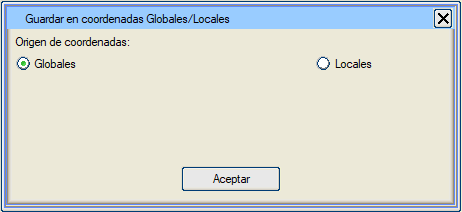
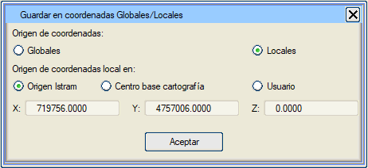

| |
|
LOKAL KOORDİNAT ORİJİNİ
|
|
Bir nesne bu formatta kaydedilirken, bu dosyayı alacak olan program dikkate alınarak, nesnenin koordinatlarının nasıl kaydedileceği belirtilebilir.  İki seçenek mevcuttur: global koordinatlar ve lokal koordinatlar. Global koordinatlarda, kaydedilen nesne hedef programda Istram®'da verilen orijinal koordinatlarında geri yüklenecektir. Örneğin: (720439.2348, 4758935.4821, 575,3487) |
|
 Lokal koordinatlarda, kaydedilen nesne hedef programda, verilen bir orijine göreli koordinatlarıyla geri yüklenecektir. Dışa aktarılan tüm koordinatlardan, nesnenin koordinatlarının 0'a yakın olması için X, Y ve Z yönünde bir öteleme değeri çıkarılacaktır. Bu orijinin koordinatlarını belirtmenin üç yolu vardır:
|